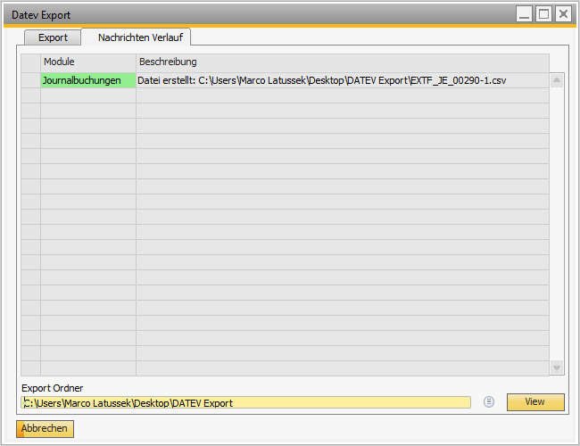

DATEV-Buchungsexport (Datev Export)
Überblick
Das Versino Datev Export Modul ist die zentrale Schnittstelle für den Export von SAP Business One Daten in das DATEV-Format. Es ermöglicht den vollständigen Datenaustausch, einschließlich Buchungen, Stammdaten (Debitoren, Kreditoren, Sachkonten) und Zahlungsinformationen, und ist speziell für deutsche Buchhaltungsanforderungen optimiert.
Zugang zum Modul: Sie finden den Export-Dialog unter Versino Financial Suite > DATEV Export/Import > DATEV Export. Die Export-Protokolle können unter Versino Financial Suite > Protokolle > Export Log eingesehen werden.
Vorteile des Moduls
- Umfassende Datenintegration: Exportiert nicht nur Journalbuchungen, sondern auch alle relevanten Stammdaten und Zahlungsbedingungen für eine vollständige Datenübergabe.
- Intelligente Status-Verwaltung: Verhindert durch eine automatische Statusverfolgung für jede Buchung effektiv Doppel-Exporte und sichert eine lückenlose Nachverfolgung.
- Qualitätssicherung: Detaillierte Protokollierung, Validierung vor dem Export und eine transparente Fehlerbehandlung sichern die Datenqualität.
Hauptfunktionen
Umfassender Datenexport
Das Modul exportiert nicht nur Journalbuchungen, sondern auch alle relevanten Stammdaten, um eine vollständige Datenübergabe an Ihren Steuerberater zu gewährleisten:
- Journalbuchungen
- Debitoren- und Kreditorenstammdaten
- Sachkontenbeschriftungen
- Zahlungsbedingungen
Intelligente Export-Status-Verwaltung
Jede Buchung erhält einen Export-Status, um Duplikate zu vermeiden und die Nachverfolgung zu sichern. Dieser Status wird direkt in der Journalbuchung angezeigt.
Detaillierte Filtermöglichkeiten
Für den Buchungsexport stehen umfangreiche Filter zur Verfügung, um die Datenmenge genau zu definieren. Sie können nach Datumstyp (Buchungs- oder Belegdatum), Zeitraum, Buchungsart und vor allem nach dem Export-Status filtern.
Protokollierung und Monitoring
Alle Export-Vorgänge werden detailliert in einem Protokoll-Tab aufgezeichnet. Dies hilft dabei, den Erfolg zu überwachen und eventuelle Fehler schnell zu identifizieren und zu analysieren.
Anwendung: Schritt-für-Schritt
Buchungen und Stammdaten exportieren
- Navigieren Sie zu Versino Financial Suite > DATEV Export.
- Wählen Sie die zu exportierenden Datentypen (z.B. Journalbuchungen, Debitoren/Kreditoren).
- Definieren Sie den gewünschten Zeitraum und den Datumstyp.
- Setzen Sie den Filter bei "Buchungsstatus" auf "Nur nicht exportierte", um Duplikate zu vermeiden.
- Wählen Sie das Zielverzeichnis für die Export-Datei aus.
- Klicken Sie auf "Export starten". Die Buchungen werden exportiert und in SAP B1 automatisch als "exportiert" markiert.
Export-Protokoll überprüfen
Wechseln Sie nach dem Export zum Protokoll-Tab. Hier sehen Sie eine detaillierte, farbcodierte Aufzeichnung aller Vorgänge und können eventuelle Fehlermeldungen analysieren.
Export-Status manuell ändern
Öffnen Sie die betroffene Journalbuchung in SAP Business One. Im Reiter "Financial Suite" können Sie den Export-Status manuell anpassen, z.B. um einen erneuten Export zu ermöglichen.
Allgemeine Tipps für die Anwendung
- Export-Strategie: Führen Sie regelmäßige Exporte durch (z.B. monatlich), um die Datenmengen überschaubar zu halten. Nutzen Sie aussagekräftige Export-Pfade zur besseren Organisation.
- Qualitätsprüfung: Prüfen Sie nach jedem Export das Protokoll auf Warnungen oder Fehler. Validieren Sie Exporte mit kleinen Zeiträumen, bevor Sie große Datenmengen verarbeiten.
- Status-Verwaltung: Nutzen Sie die Status-Filter gezielt. Um einen fehlerhaften Export zu korrigieren, können Sie den Status manuell zurücksetzen und nur die fehlgeschlagenen Buchungen erneut exportieren.
Fehlerbehandlung bei Problemen
Problem: Export schlägt mit einem Validierungsfehler fehl.
Lösung: Prüfen Sie das Protokoll auf Details. Häufige Ursachen sind geschlossene Buchungsperioden, fehlende Konten- oder Steuerzuordnungen oder inkonsistente Kontenpläne. Analysieren Sie die Fehlermeldung im Protokoll-Tab.
Problem: Die erstellten Export-Dateien sind unvollständig oder fehlerhaft.
Lösung: Stellen Sie sicher, dass Sie Schreibrechte für das gewählte Export-Verzeichnis haben und genügend Speicherplatz vorhanden ist. Überprüfen Sie den Export-Zeitraum.
Problem: Der Export-Status wird bei einer Buchung nicht aktualisiert.
Lösung: Überprüfen Sie Ihre Benutzerberechtigungen für das Ändern von Journalbuchungen. Stellen Sie sicher, dass das Add-On korrekt installiert ist. Im Notfall kann der Status manuell in der Journalbuchung geändert werden.
Problem: Der Export-Dialog öffnet sich nicht.
Lösung: Überprüfen Sie Ihre Benutzerberechtigungen für das Modul. Stellen Sie sicher, dass die Financial Suite korrekt geladen wurde und der Menüpunkt aktiv ist.